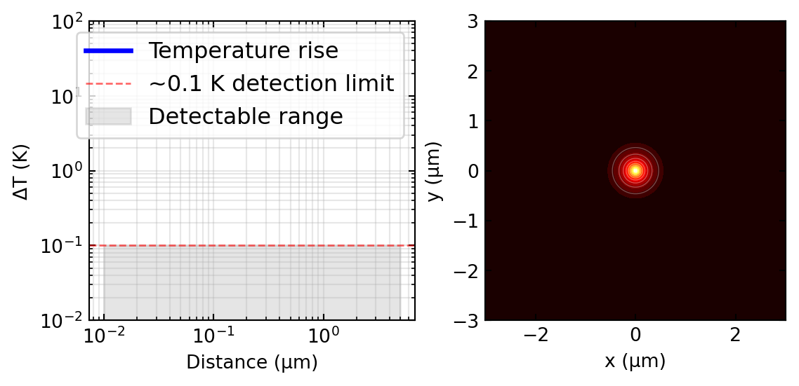
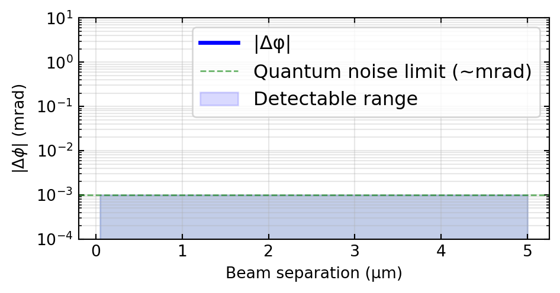
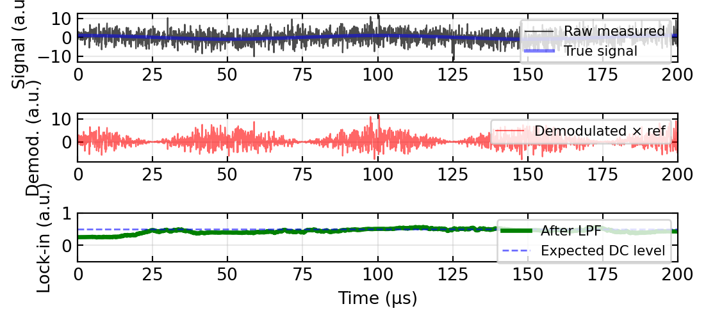
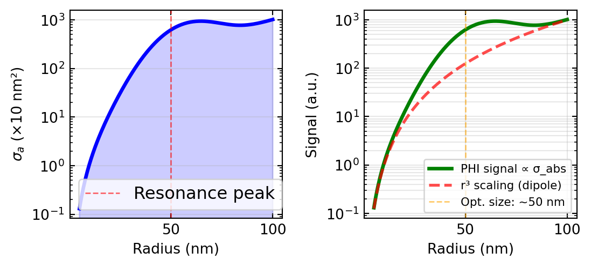

Temperature rise at r = 0.1 μm: ΔT ≈ 0.00 K
Temperature rise at r = 1 μm: ΔT ≈ 0.00 KPhotothermal detection represents one of the most powerful and elegant techniques in modern optical sensing. While absorption spectroscopy measures light that is removed from a beam, photothermal sensing directly detects the heat generated when matter absorbs light. This seemingly simple idea opens an entirely new window into characterizing nanoparticles, single molecules, and biomolecules with unprecedented sensitivity and label-free contrast.
In this lecture, we connect fundamental principles of light-matter interaction, thermal diffusion, and optical interferometry to build a complete picture of photothermal microscopy and detection. By the end of this 90-minute session, you will understand:
This is a field at the intersection of condensed matter physics, biophysics, and optical engineering—with major applications from biomedicine to nanomaterial characterization.
When light propagates through an absorbing medium, the intensity decreases according to:
\[I(z) = I_0 e^{-\alpha z}\]
where \(\alpha\) is the absorption coefficient (units: cm\(^{-1}\)). For a nanoparticle much smaller than the wavelength, we define the absorption cross section \(\sigma_{\text{abs}}\) (units: nm\(^2\)), which represents the effective area over which the particle absorbs photons.
If a plane wave of intensity \(I_0\) illuminates the nanoparticle, the absorbed power is:
\[P_{\text{abs}} = \sigma_{\text{abs}} \cdot I_0\]
This absorbed energy must be dissipated as heat. In the steady-state regime (continuous-wave laser illumination), the thermal energy flows outward through conduction in the surrounding medium.
Consider a small spherical heat source at temperature \(T_0\) dissipating power \(P_{\text{abs}}\) into an infinite medium with thermal conductivity \(\kappa\). The steady-state temperature profile in 3D is:
\[\Delta T(r) = T(r) - T_\infty = \frac{P_{\text{abs}}}{4\pi \kappa r}\]
This \(1/r\) decay is fundamental to heat diffusion. For a nanoparticle of radius \(a\) embedded in a medium:
Key observations: - Smaller particles → larger temperature rise (for fixed power) - Higher thermal conductivity → faster heat dissipation - Modulation frequency → limited by thermal diffusion time \(\tau_T \sim a^2/D_T\), where \(D_T = \kappa/(\rho c)\) is thermal diffusivity
The thermal energy deposited at the particle scales with the absorption cross section, which for gold nanoparticles can be enormous—much larger than their geometric cross section!
The key insight of photothermal detection is that most transparent media have a refractive index that changes with temperature:
\[\Delta n = \left(\frac{\mathrm{d}n}{\mathrm{d}T}\right) \Delta T = \beta \, \Delta T\]
where \(\beta = \mathrm{d}n/\mathrm{d}T\) is the thermo-optic coefficient (typically \(10^{-4}\) to \(10^{-3}\) K\(^{-1}\)).
Examples: - Water: \(\beta \approx -1.0 \times 10^{-4}\) K\(^{-1}\) (refractive index decreases with temperature) - Typical oils: \(\beta \approx -4 \times 10^{-4}\) K\(^{-1}\) - Fused silica: \(\beta \approx 1.0 \times 10^{-5}\) K\(^{-1}\)
Therefore, a heated absorber creates a spatial variation in refractive index:
\[n(\mathbf{r}) = n_0 + \beta \Delta T(\mathbf{r}) = n_0 + \beta \frac{P_{\text{abs}}}{4\pi \kappa |\mathbf{r}|}\]
When a probe beam passes through this refractive index gradient, it experiences a lens effect. The spatial phase modulation creates focusing (for \(\beta > 0\)) or defocusing (for \(\beta < 0\)).
The phase shift experienced by a probe beam passing at distance \(r_0\) from the heat source is approximately:
\[\Delta \phi(r_0) \approx \frac{2\pi}{\lambda} \int_{-\infty}^{\infty} \beta \frac{P_{\text{abs}}}{4\pi \kappa r(x,y)} \, \mathrm{d}z\]
For a probe beam co-aligned with the pump, the phase gradient creates an angular deflection and/or intensity redistribution—the thermal lensing effect.
This is not absorption of the probe: it is a phase modulation. A weak probe beam passing through the thermal lens experiences: - Spatial phase shift - Angular deflection (tilt) - Transverse intensity redistribution
These effects are the basis of all photothermal detection schemes.
The strategy is simple but powerful: 1. Pump beam (at frequency \(\nu_0\)): absorbed → heats the sample 2. Probe beam (at frequency \(\nu_p\)): senses the refractive index change 3. Modulation: amplitude-modulate the pump at frequency \(f_m\) (typically 1–100 kHz) 4. Detection: use lock-in amplification at frequency \(f_m\) to extract the photothermal signal
If the pump intensity is modulated as: \[I_{\text{pump}}(t) = I_0 (1 + m \cos(2\pi f_m t))\]
then the absorbed power oscillates: \[P_{\text{abs}}(t) = \sigma_{\text{abs}} I_0 (1 + m \cos(2\pi f_m t))\]
This drives a temperature oscillation: \[\Delta T(t) = \Delta T_0 (1 + m \cos(2\pi f_m t - \phi))\]
where the phase lag \(\phi\) depends on the thermal diffusion time. The probe beam experiences a phase modulation, which creates an intensity modulation in the detection optics.
A lock-in detector multiplies the detected signal \(S(t)\) by a reference oscillation at \(f_m\) and low-pass filters:
\[S_{\text{LIA}} \propto \langle S(t) \cos(2\pi f_m t) \rangle_{\text{filtered}}\]
This rejects all noise at frequencies different from \(f_m\), achieving shot-noise-limited sensitivity.
In practice, the pump beam intensity is often modulated using an acousto-optic modulator (AOM), a device that leverages the interaction between light and sound waves. An AOM consists of a transparent crystal (typically tellurium dioxide) with a piezoelectric transducer bonded to it. When a radiofrequency (RF) signal drives the transducer, it generates an acoustic wave (ultrasound) that propagates through the crystal, creating a periodic refractive index grating. Incident light diffracts off this acoustic grating according to the Bragg condition, and the first-order diffracted beam emerges with its frequency shifted by the acoustic frequency (Doppler shift) and with intensity directly modulated by the acoustic amplitude.
The key advantages of AOMs for photothermal microscopy are: (1) switching speed: typically ~100 ns, much faster than mechanical choppers; (2) modulation frequencies: 100 kHz to >1 MHz, well-suited for lock-in detection; (3) efficiency: 80–90% of light can be directed into the first-order beam; (4) programmability: RF frequency and amplitude can be dynamically controlled. In a typical photothermal setup, the AOM modulates the pump beam at 100 kHz–1 MHz, and the lock-in amplifier is tuned to detect the photothermal signal at that exact frequency. Beyond photothermal microscopy, AOMs are ubiquitous in confocal scanning, STED (stimulated emission depletion microscopy for depletion beam control), and optical trapping, where precise, fast modulation of laser beams is essential.
A typical photothermal microscope operates as follows:
Gold nanoparticles (AuNPs) are ideal model systems for photothermal detection:
For a 50 nm AuNP at resonance with 1 mW focused into a \(\sim 500\) nm spot: \[I_0 \sim 10^9 \text{ W/cm}^2 = 10^5 \text{ W/m}^2\] \[P_{\text{abs}} = \sigma_{\text{abs}} I_0 \approx (10 \text{ nm}^2) \cdot (10^5 \text{ W/m}^2) \sim 1\text{–}10 \text{ pW}\]
This tiny power still produces a measurable temperature rise and detectable phase shift!
Can we detect individual organic dye molecules or small proteins?
Challenge: photobleaching at such high intensities. But under controlled conditions, single dyes and small proteins have been detected phototermally with good signal-to-noise ratio.
Key advantage: unlike fluorescence, no quantum yield limit—every absorbed photon counts, independent of emission efficiency.
A more sensitive variant of photothermal microscopy uses heterodyne detection. The idea:
Let: - \(E_{\text{scat}}(t) = A_{\text{scat}} e^{i(\mathbf{k}_p \cdot \mathbf{r} + 2\pi f_p t)}\): scattered probe field due to thermal lens - \(E_{\text{ref}}(t) = A_{\text{ref}} e^{i(2\pi f_p t + \phi_0)}\): reference field - \(E_{\text{beat}}(t) = A_{\text{ref}} e^{i\phi_0}\): beating at the detector
The heterodyne gain comes from the term: \[I_{\text{het}} \propto 2 A_{\text{ref}} A_{\text{scat}} \cos(\phi_{\text{scat}} - \phi_0)\]
For weak scattering (\(A_{\text{scat}} \ll A_{\text{ref}}\)): \[I_{\text{het}} \approx 2 A_{\text{ref}} A_{\text{scat}}\]
Compared to homodyne (direct intensity) detection: \[I_{\text{hom}} \propto A_{\text{scat}}^2\]
Heterodyne amplifies the signal by the reference amplitude—a gain of \(A_{\text{ref}}/A_{\text{scat}} \gg 1\).
The photothermal heterodyne signal is proportional to: \[S_{\text{PHI}} \propto A_{\text{ref}} \cdot (\nabla n) \cdot P_{\text{abs}} \propto \sigma_{\text{abs}}\]
Direct measurement of absorption cross section!
This makes PHI particularly powerful for: - Comparing absorption spectra of single nanoparticles - Measuring small changes in absorption (e.g., conformational changes in proteins) - Wavelength-dependent single-particle spectroscopy
Map the spatial distribution of absorbing nanoparticles (Au, Ag, carbon dots) without adding fluorescent labels.
Example: imaging plasmonic nanoparticles in cellular uptake studies - Detect size-dependent absorption changes - Map nanoparticle localization to subcellular organelles - No photobleaching, no fluorescence intermittency
Measure absorption spectra of individual protein molecules, oligonucleotides, or chromophore complexes.
Key results: - Heterogeneous absorption profiles not visible in bulk measurements - Direct access to intrinsic absorption without fluorescence yield assumptions - Dynamic absorption changes during protein folding/unfolding
Use photothermal microscopy to detect: - Biomarker binding: functionalize Au nanoparticles with antibodies; signal increases upon antigen binding - DNA hybridization: Au particles conjugated to complementary probes; detectable upon target DNA capture - Protein-protein interactions: monitor absorption changes at single-molecule level
Advantages: - No enzyme-linked assays needed - Label-free (or minimal labeling) - Real-time kinetics - Multiplexing possible (different wavelengths, sizes)
Combine photothermal detection with particle tracking: - Track Brownian motion of gold nanoparticles through viscous fluid - Measure diffusion coefficient: \(D = k_B T / (6\pi \eta r)\) (Stokes relation) - Infer hydrodynamic size of viruses, exosomes, micelles - Distinguish aggregation states in real-time
Signal-to-noise is excellent because photothermal detection is background-free.
Photothermal detection operates in the thermal regime (modulation frequencies 1–100 kHz, thermal diffusion time \(\sim 1\) μs for micron-scale structures).
Photoacoustic imaging uses pulsed laser excitation (short pulses, sub-nanosecond timescale):
Both techniques detect the same fundamental process: \[\text{Photon absorption} \to \text{Heat generation} \to \text{Refractive index/acoustic change}\]
For molecules and nanoparticles, both measure the absorption cross section \(\sigma_{\text{abs}}\).

Temperature rise at r = 0.1 μm: ΔT ≈ 0.00 K
Temperature rise at r = 1 μm: ΔT ≈ 0.00 K
Maximum phase shift (co-aligned beams): 0.000 mrad
Phase shift at 1 μm separation: 0.0000 mrad
SNR before lock-in: 0.053 (-12.7 dB)
SNR after lock-in: 99.809 (20.0 dB)
Noise rejection: 1867.0× improvement
Absorption cross section (relative units):
r = 20 nm: σ_abs = 11.9
r = 50 nm: σ_abs = 620.3 (resonance peak)
r = 80 nm: σ_abs = 789.5
Photothermal signal enhancement from 20→50 nm: 52.3×Photothermal detection is a powerful, label-free technique that exploits a fundamental connection:
\[\text{Absorbed light} \longrightarrow \text{Heat} \longrightarrow \text{Refractive index change} \longrightarrow \text{Phase/intensity modulation}\]
Key concepts: 1. Temperature gradients scale as \(\Delta T(r) = P_{\text{abs}} / (4\pi \kappa r)\) in 3D 2. Thermal lensing creates phase shifts detectable with a probe beam 3. Lock-in detection at the pump modulation frequency provides background-free signal 4. Absorption cross section is directly measured—especially large for plasmonic nanoparticles 5. Single-particle and single-molecule sensitivity is achievable with appropriate configurations 6. PHI (photothermal heterodyne imaging) uses interference for enhanced sensitivity 7. Applications span nanoscience (nanoparticle tracking), biosensing (molecular binding), and deep-tissue imaging (photoacoustic variant)
This technique beautifully demonstrates how fundamental physics principles—thermal conduction, optics, and signal processing—combine to create modern analytical tools used daily in research labs worldwide.
Photothermal detection combines optics, thermodynamics, and signal processing — a rich playground for experiments:
Thermal lens effect in absorbing liquids Focus a laser (even a laser pointer) into a cuvette of dilute ink or coffee. Place a screen behind the cuvette and observe the far-field beam profile changing over seconds — the thermal lens causes the beam to diverge. Block the beam and watch it relax. The timescale is set by thermal diffusion.
Lock-in detection principle Modulate a light source (LED with a function generator) at a known frequency. Detect with a photodiode and an oscilloscope — the signal is buried in noise. Now use a lock-in amplifier (or a software lock-in: multiply by the reference and low-pass filter). The signal-to-noise improvement is dramatic and teaches why modulation is essential for sensitive detection.
Photothermal contrast of metal nanoparticles Gold nanoparticles (50–100 nm) absorb strongly at 532 nm. Deposit them on a coverslip, illuminate with a modulated green laser (heating beam), and probe the refractive index change with a red probe beam. Even without a commercial photothermal microscope, the principle can be demonstrated with a simple two-beam setup and a lock-in amplifier.
Absorption vs. scattering: comparing nanoparticle signals Compare darkfield (scattering) and photothermal (absorption) images of the same gold nanoparticle sample. Small particles (< 40 nm) are nearly invisible in darkfield but clearly detected in photothermal imaging — this teaches the \(a^3\) vs. \(a^6\) scaling of absorption vs. scattering cross-sections.
Thermal diffusion timescale measurement Vary the modulation frequency of the heating beam and measure the photothermal signal amplitude. The roll-off frequency corresponds to \(f_c \sim D_\text{th} / w_0^2\), where \(D_\text{th}\) is the thermal diffusivity and \(w_0\) the beam waist. This connects the signal to the heat equation solved in the lecture.
The following references are linked to the central Resources & Recommended Reading page:
Lecture 13: Photothermal Detection & Sensing — Introduction to Photonics